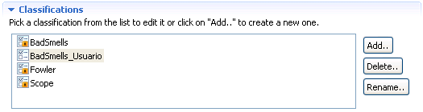

Eliminar clasificacionesEliminar clasificaciones
Eliminar clasificacionesEliminar clasificacionesIgual que ocurría con la modificación, sólo se pueden eliminar las clasificaciones de usuario. Cuando se elimina una clasificación, todas las categorías que pertenecían a la clasificación también son eliminadas y por tanto todas las refactorizaciones dejan de pertenecer a estas de forma definitiva.
Para eliminar una clasificación basta con ir al panel de clasificaciones, seleccionar la clasificación de usuario que se quiere eliminar y pulsar el botón de borrar.

Sección de categorías de la clasificación